Summary
For establishing a brand in online space, effective channeling of one’s content is indispensable.The key this is HASHTAGS. Tagging helps the content reach the 'correct audience’, who willnot only appreciate the worth of the products, but also possibly translate their appreciationinto actual sales.
For many art-based businesses, even the established ones, there is a gap in understanding theimportance of hashtags. The process of choosing relevent, effective and popular tags isobscure and confusing - they often don’t understand why certain posts perform better thanothers.
#box
#cube
#square
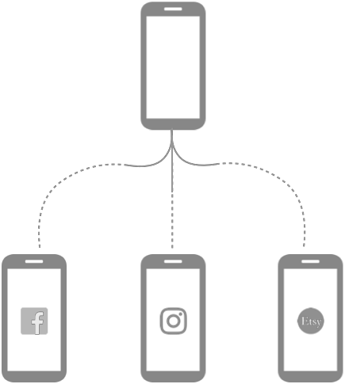
Hashtag Guru aims to simplify this process.
When an artisan is ready to post a photo, theycan upload it into the application which willthen attempt to identify the product andsuggest relevant hashtags.
Artisans can then pick and choose whichhashtags to associate with their photo,complete the composition of their post, andshare it out across all of their social mediaaccounts.
This mobile-based solution also provides a staging area for the content development,allowing users to consistently develop posts for multiple online platforms simultaneously,thereby, largely reducing the publishing effort needed for each platform individually.
INTERACTIVE PROTOTYPE
PROCESS
DESIGN
RESEARCH
IDEATE
TEST
BrainstormingConcept SketchesUser feedback sessionsUser personasJourney Mapping
Storyboarding
Usability Testing
SUS
NASA TLX
Learnability assessment
Refinement & Iteration
Literature ReviewCompetitive AnalysisField Research
User InterviewsAffinity MappingEmpathy Mapping
Concept Refinement
Information ArchitechturePaper prototypeUser flowsWireframing
Interactive prototype
ROLE
TOOLS
Developed and refinedconcept sketches on designalternatives. Conducted userfeedback sessions for conceptrefinement.
Conducted Literature Review,User Interviews and AffinityMapping. Derived EmpathyMaps and User Personasbased on research.
RESEARCH
Affinity MapsEmpathy MapsJourney Maps
Personas
ANALYSIS
IDEATE
DESIGN
Sketch
Adobe XD
InVision
Developed informationarchitecture, paper prototypeand user interaction flow forthe design. peer-reviewedwireframes and interactiveprototype for refinement.
Refined concept design basedon task-based usabilitytesting sessions conducted bythe team.
DESIGN
TEST
TEST
SUS
NASA TLX
Problem Space
When artisans put their products online, they try to do more than just generate commerce; they strive to
communicate the value and worth of their creations through:
time
invested
the
effort
quality
of materials
thought
& ideology
Hence, a large effort goes into creating the content for online platforms. The process inludes:
Preparation
Publishing
Refinement
Action
Choose & line up theproducts. Set up one, takeshots from multiple angles.Play around with settings.
Plan the space, lighting. Set upthe backdrop and accessories.Try many camera settings & takesample pictures
Analyze the pictures. Choosegood ones & edit. If notsatisfied, take photographsagain.
Write content description.Highlight the product features.Add hashtags and mentions.Post on channels.
As simple as this process looks, it becomes really tedious as the number of products go high.
Yay!
We proposed a solution for each of these stages, which were then evaluated with the users. Based on theirfeedback and, and constraints around technical feasibility, we chose to purse the design to improve contentpublishing, which resulted in Hashtag Guru.
Our Solution
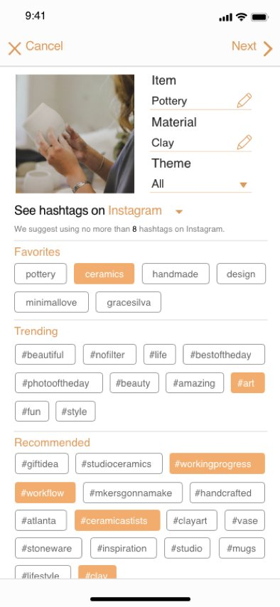
Hashtag Guru simplifies the process of finding and attaching relevant, trending hashtags to product photos. It helps reduce the
confusion and tedium surrounding the production and distribution of content for their social media accounts.
KEY FEATURES
Hashtag Recommendation
Favorite tags
Commonly used tags foreasy access
Trending tags
Image recognition
Tags identified as trendingbased on season, upcomingfestivals and user’s followers
App will identify contextualinformation of the phototin terms of item, materialand theme
Recommended tags
Recommendations basec onimage analysis and user’shistory
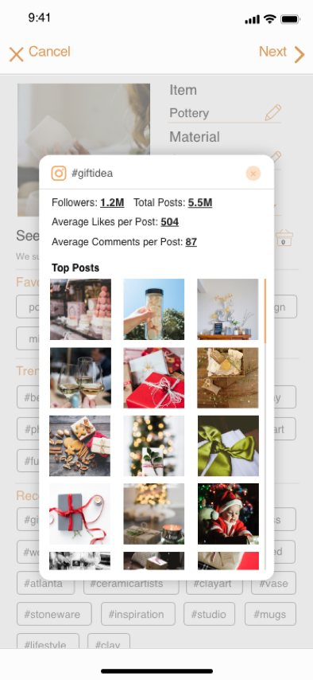
Hashtag Preview
Tag Analytics
User can see the analyticalinformation about the tag
Social media mapping
Tag analytics is organisedbased on different socialmedia platforms
Associated Content
Users can preview theimages posted under a tagto verify its relevance
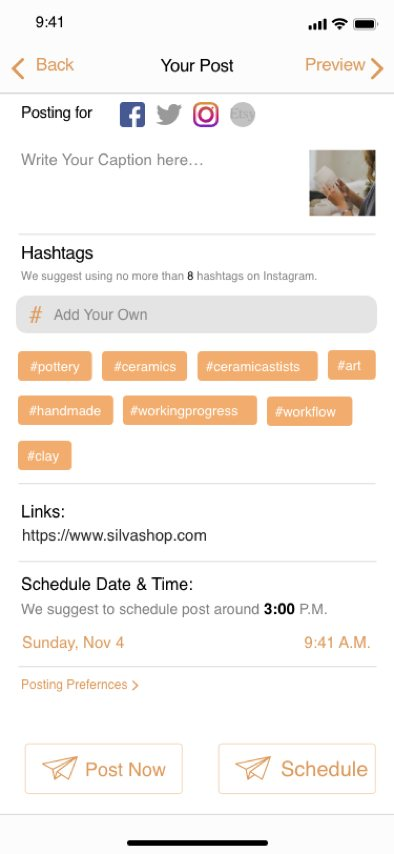
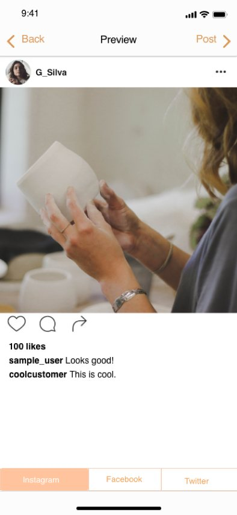
Content staging & Preview
Staging Area
User can formulate contentbefore posting.
Platform integration
Users can choose whichplatform to aim for
Content editing
Users edit the content foreach platform individually
Social media mapping
Users can preview how theirpost will appear on each ofthe chosen social mediaplatforms
Scheduling
Post can be scheduled for alater date and time as well
Post scheduling
Calendar View
Planning for events
Users can schedule theposts to be published at alater date and time
Users can see the poststhey have scheduled inrelation with upcomingevents.
Users can choose & planthe events for which theywould like to create content
Post analytics
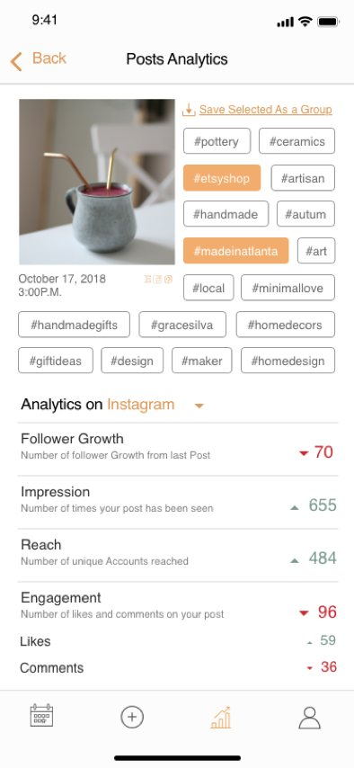
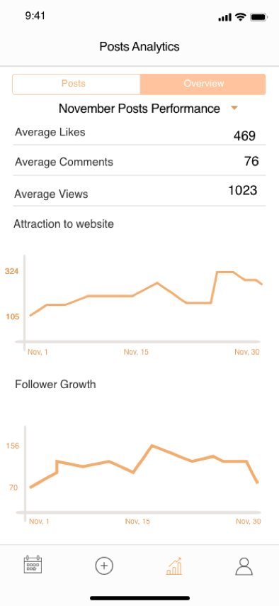
Hashtag Analysis
Users can select specifictags to view more granulardata on how the tagscontributed to the overallsuccess of the post.
Post analysis
Users can view analyticsdata on how the postsperformed in terms offollower growth, outreach,user engagement & othermetrics
Platform Analysis
Analytics data is alsoavailable for every platformon which the post wasshared
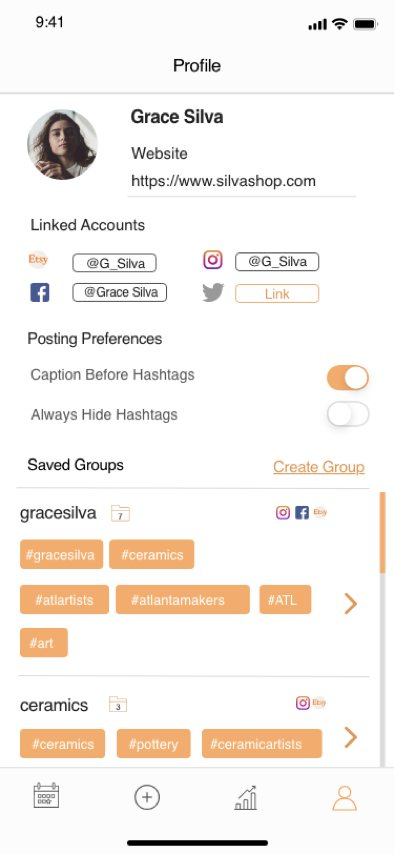
User Profile
Posting Preferences
Users can specify how theapp should handle tags inrelation to the rest of thecontent within their post
Platform management
Users can link their socialmedia accounts and theire-commerce stores to theirprofile
Saved Groups
Users can view & edit theircollection of tags that theyhave saved as favorites.
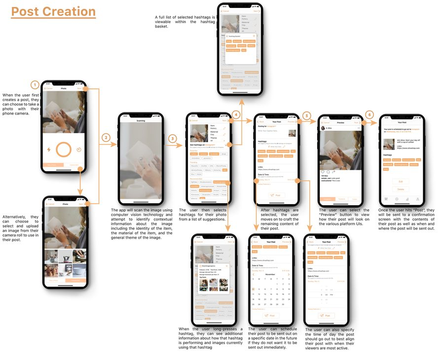
USER FLOWS
Behind The Curtains
Stage 1: Research
We started off with understanding how artist-based businesses work towards establishing a brand in a local community and identifying
the factors that dictate a brand’s success.
Major stakeholder groups
Art-stores operatea store/platformthat showcasesartists’ crafts.
Artists operateindependently, orin small teams.
Artisans
Art-store
Research tools
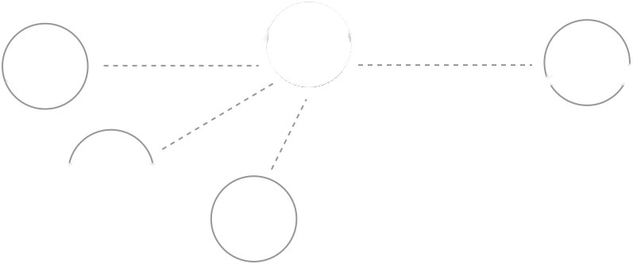
Contextual Inquiry
Secondary research
Field observation
Open-ended
interviews
Semi-structured
Interviews
Problem space expance
Initial findings
Establishing brand
Store
real-estate
Inventory
Populace
Digitisation
Time
Marketing
Branding in online space
Social Media
Personal Website
Omnipresence
They use social media formarketing & e-commerce.However, it requires frequentmaintenance to ensure thehigh traffic.
They also own websites serving ascatalogue and e-commerceplatform. However, there is noincentive for bringing in traffic,unlike social media.
Businesses need maintain activepresence on every online platform,leading to an overhead of time,effort and money in managingthem.
Stage 2: Analysis
All the information gathered previous phase from the interviews, observations and contextual inquiries was mapped to and analysed
using the a number of methods.
First, the problem space was refined using Affinity Diagramming.
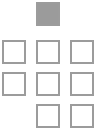
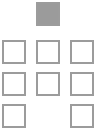
Affinity diagramming
Since the problem space was diverse and expansive, we used the affinity diagramming tocapture the natural relationships that emerged from large number of insights we gatheredearlier.
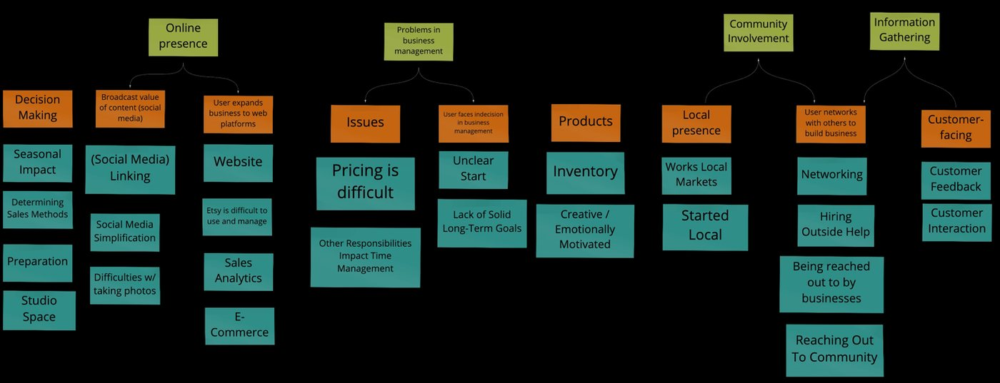
We were able to extract common themes across the artisans’ experiences that are shown below
Using these findings, we ideated on various 'How-might-we’ questions to establish a clear problem space and consolidate enough
details to guide us towards solution
help artisans find side jobs
while engaging in their primary
pursuits?
How might we…
help emerging artisans find
local opportunities?
help artisans prepare
themselves for seasonal
demographics?
assist art store owners
showcase the depth of their
inventory?
help artisans communicate the
value of their product to larger
masses?
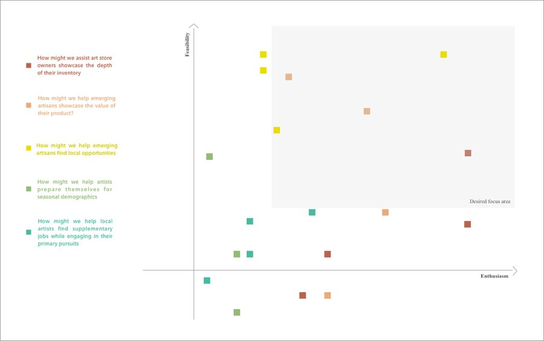
We created a feasibility matrix that mapped each problem on to a 2-dimensional chart of novelty vs feasibility based
on how feasible it would be for us to address the issue successfully within the project constraints.
Using this process we simplified and iterated over our problem space, and finally zeroed down on the following:
How might we help artisans simplify
the process of publishing their artifacts online?
Empathy Maps
To gain a better understanding of our target users, we translated our interview data intoempathy map capturing quotes, thoughts, feelings, and actions of art-based business owners.However, given the diversity of data, we had to go for 3 maps targeting full-time artist, part-time artist and emerging artist individually
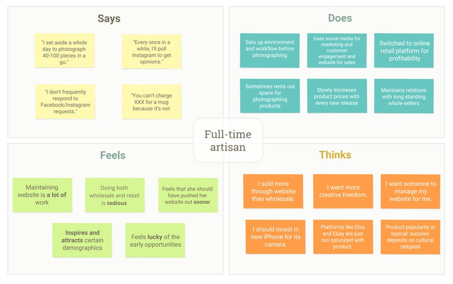
Full-time artisan
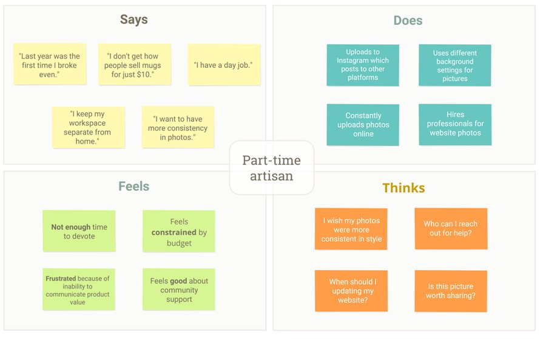
Part-time artisan
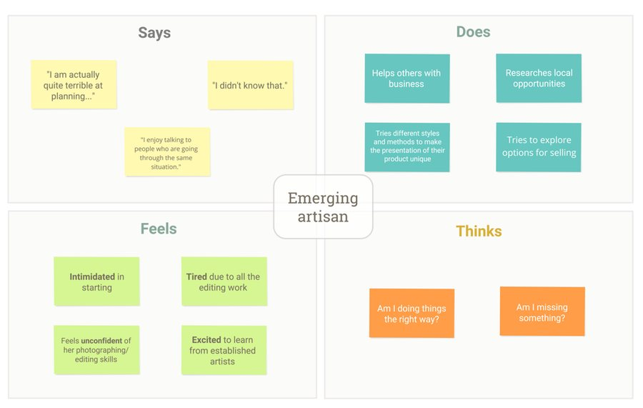
Emerging artisan
User Personas
The empathy maps helped us derive user personas whch allowed us to step into the shoes of
the three types of artisans and approach the problem with their perspective.
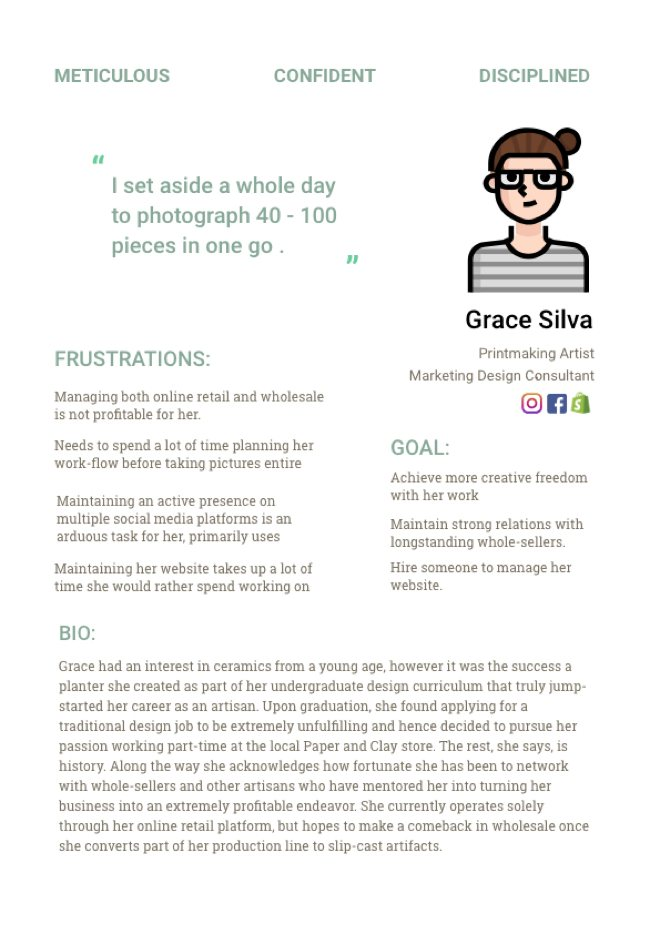
Full-time Artisan
Full-time artisans spend all their time focused onrunning their business and hence, have established astructured approach for their tasks. The areas that theystruggle with are more associated with expanding andgrowing their business like, adjusting production inresponse to customer feedback, expanding the businessonto new platforms etc.
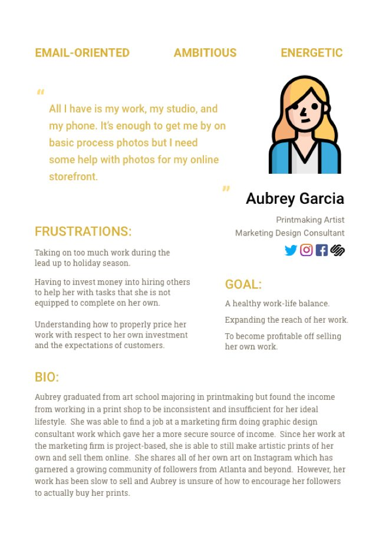
Part-time Artisan
For part-time artisans, there is always a side job theyneed to support themselves. This juggling often leavesthem with limited time on their hands. They maysometimes hire someone to offload the work, such asphotographing their products or helping with packagingand shipping during promotions.
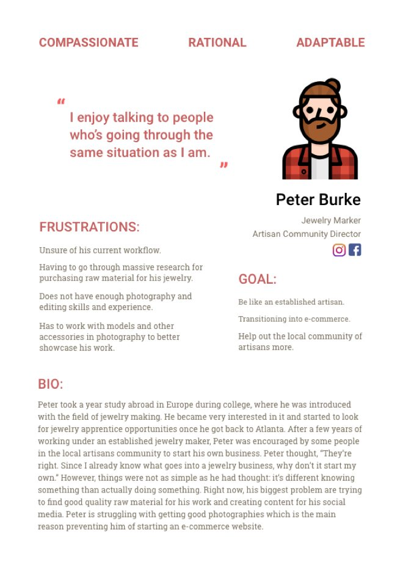
Emerging Artisan
For emerging artisans, we came across this commonproblem of hesitation and lack of confidence in varioustasks like engaging with community, communicating thevalue of their products online and in-stores and justputting themselves out there.
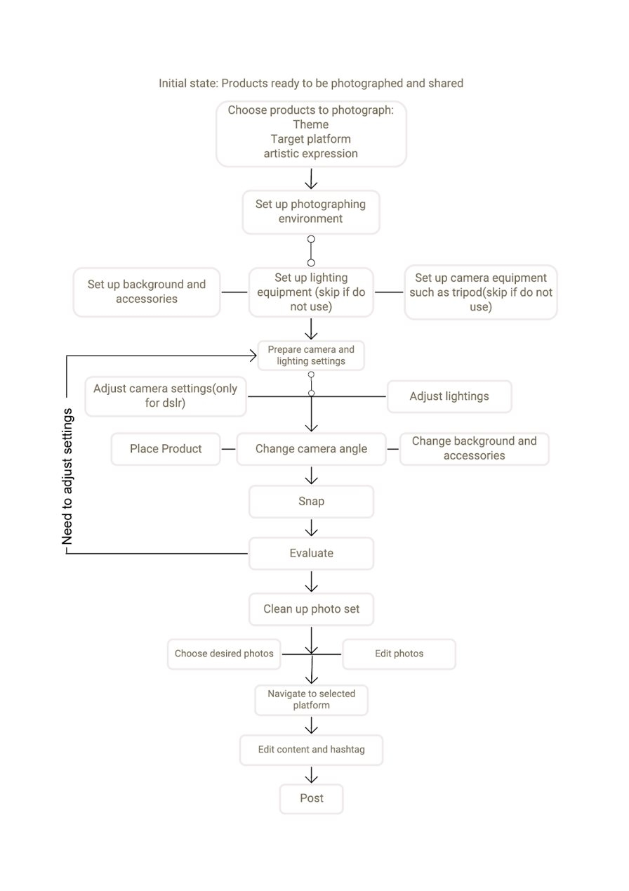
Once our personas were defined, we analysed some of the tasks they do to publish their
content in online space. On a high level the tasks look like this:
Task Analysis
Journey map
While charting out the tasks through an in-depth task analysis, we realized the need understandthe overall experience of our users - across all platforms and touchpoints - not just in terms of thesteps they took but also how they felt and what they thought throughout their journey. This, wecaptured in a visually rich format which helped us in identifying different opportunities forintervention.
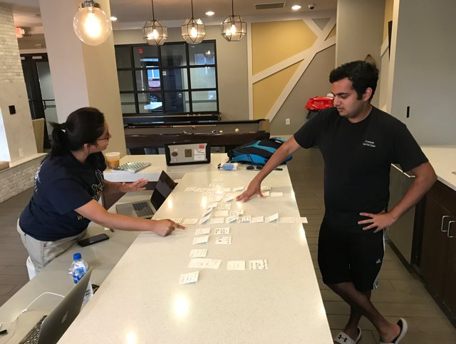
Stage 3: Ideation
Brainstorming
We began our ideation process with a small session of individualbrainstorming where we each attempted to come up with as manyideas for design solutions as possible.
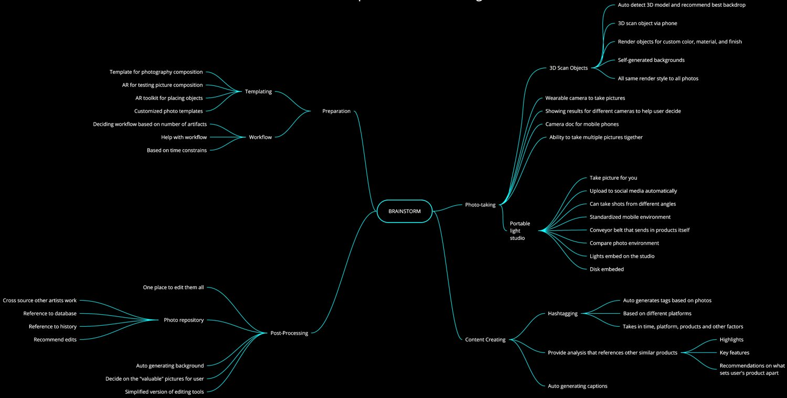
Mind map for brainstorming
Many design themes that turned up in the brainstorming session, of which we chose to explore 3:
Studi.O
Hashtag Guru
ArtiScan
Analyzing product photos to suggesthashtags, mentions and other things that’llhelp the content get more traction on socialmedia.
Creating virtual form of product that couldthen be used against any setting
Automating the photo-capturing workflowTaking multiple photos quickly and withease.
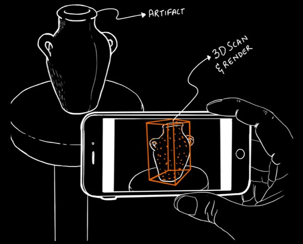
Design I: ArtiScan
ArtiScan allows artisans to scan their work and convert it into a 3D model, which they can then manipulate within the mobileapp to apply custom materials and finish, before having the app generate a series of photorealistic images at different angles,lighting and foci.
3d scanning
Cloud render
Auto-background
generation
Saving presets
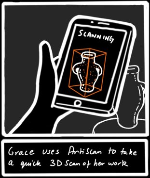
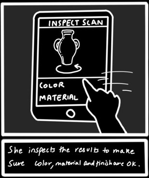
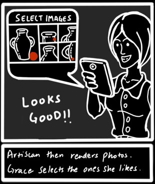
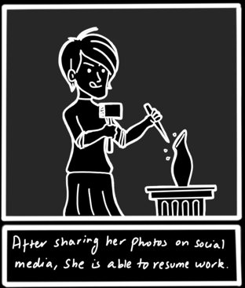
Storyboard
Once the scan is complete Artiscan opens
up an inspection screen where Grace can
make sure the scan was able to capture the
color, material, and finish of her vase. The
interface provides some quick touch-upoptions for her to make corrections ifneeded before hitting the render button.
Grace opens the ArtiScan app and starts to
3D scan her model. For the most accurate
results, the app provides Grace real-time
feedback on how to best adjust the angle
on her camera and move around the arti-
fact.
ArtiScan then proceeds to quickly render a
series of photo-realistic images, at different
angles and focii, against auto-generated
backgrounds. The bulk of the processing is
handled by remote servers via cloud com-
puting, reducing the workload on her
mobile device. The final rendered imagesare presented on a preview screen forGrace to inspect and choose.
Grace saves the images she likes for post-
ing later to social media. Further more, she
is able to save specific render settings as“presets” she can apply to future productsSatisified with the results, she is able to
resume working on her next piece.
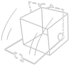
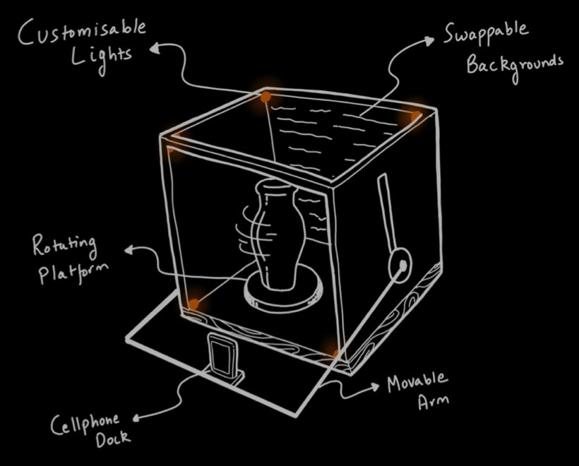
Design II: Studi.O
Studi.O is a light-enabled, portable structure that can serve as a personal photo studio for the artisans.The box is supplemented by a mobile application that is used to power the box as well as set cameraconfigurations. The app can program the box lighting and photography angles so that user can see, inreal-time, how the photos will eventually turnout.
Collapsible
Light-enabled rig
Rotating display table
Movable arm for phone
Swappable background
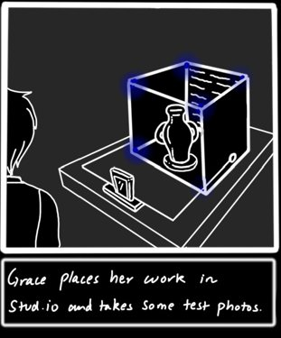
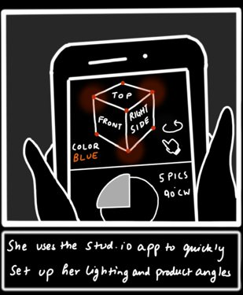
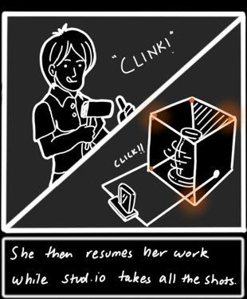
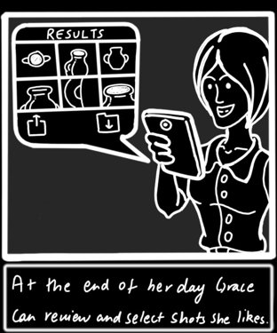
Storyboard
The process starts with Grace setting up
Stud.io box and placing their product on
the turntable. She then docks her phone in
the holder and starts the application, which
powers the environment up.
Grace sets up the studio controls like light-
ing, photo-angles, and number of shots for
the turntable from within the application.
After changing the configuration, she
receives quick feedback on how the chang-
es will impact the product photographs.
Grace chooses to take some shots from the
top-view of the product by moving the arm
holding the phone to the top. All these
settings then get saved as a configuration,
which she can simply applies for her otherproducts. This starts the photographingprocess. Given stud.io’s automated work-
flow, Grace has the luxury to carry on work-
ing while her product is being captured
Once the process is complete, Grace then
goes back and reviews the photographs
taken. She chooses the ones that she finds
most appealing and shares them on differ-
ent online platforms.
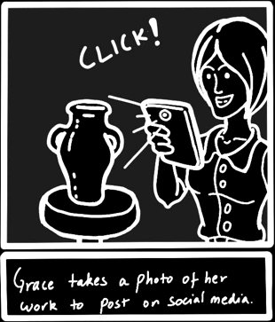
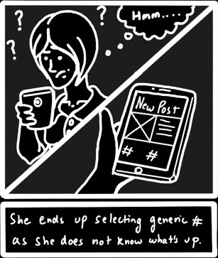
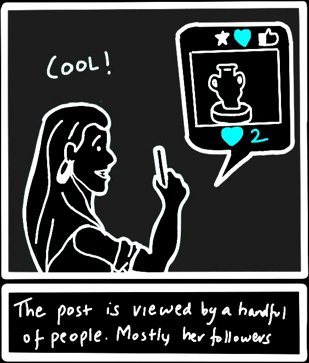
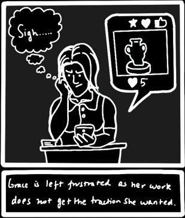
Design III: Hashtag Guru
Storyboard
Grace has just finished a new piece that
will be up for sale soon on her website.
She wants to post a photo of the new
piece she made to her social media
accounts to spread the word. She takes
her phone out and quickly snaps a pic-
ture of her new work.
When she started using hashtags in her
product posts on social media, Grace
noticed a boost in her online sales. But
since then she has been using the same
old hashtags for the past few months,
her sales and follower growth has
slowed down considerably. Her new
post has not seemed to change this.
As she begins to compose her photo
post, she writes a caption and includes
a link to her website where you can buythe new item. When she goes to fill outthe hashtags, she manually types out
the same 7 hashtags she uses for all ofher posts.
Grace is frustrated. She worked so hard
to make an awesome new product but
no one seems to noticing her work out-
side of her existing followers. If this
keeps on happening, her sales will
begin to plateau and may even drop off.
She has to do something to get herwork in front of more people
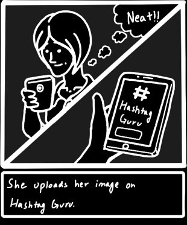
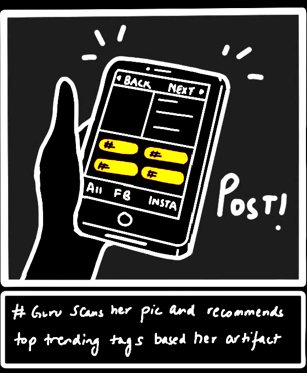
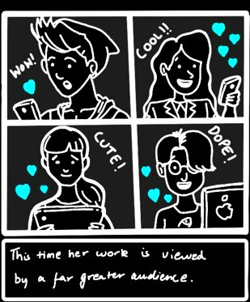
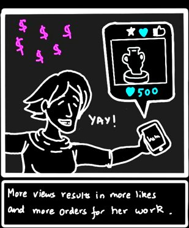
Since Grace had added hashtags sug-
gested by Hashtag Guru, her post is
seen by hundreds of thousands morepeople. Grecian art junkies, vase fanat-ics, diehard artisan supporters, they’re
all seeing Grace’s post and flocking to
her website to see what other cool stuff
is on her store.
Grace decides to try Hashtag Guru as a
way to extend her photo’s reach on
social media. She uploads the photo
she took of her new product. The app
identifies the product in the photo as a
wheel-thrown clay vase. Grace is
astonished that the app knew exactly
what the product was.
Hashtag Guru suggests various
hashtags that Grace had never thought
of using in her photo post. #amphora,
#vaselife, #shopartisan. Grace selects a
few hashtags that she had never used
before. She finishes writing out her
caption and with one last tap of the
Done button, her post is sent out to her
Instagram, Facebook, and Twitter.
Grace’s post from Hashtag Guru now
has 100 times more likes than her origi-
nal post with the same old hashtags.
She has gained more followers across
all of her social media accounts and
she has quickly sold out of the Gre-
cian-style vase from the post. Grace’s
business is now growing faster thanever.